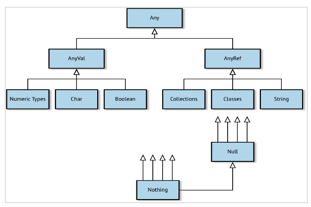

| Java 8 JRE | sudo apt-get install openjdk-8-jre | |
| Spark | http://spark.apache.org/ downloads.html |
Latest version & pre-built |
| Zeppelin | http://zeppelin.apache.org/ download.html |
Binary & all interpreters |
| IntelliJ IDEA | https://www.jetbrains.com/idea/ | Community edition |
| Scala (2.11.x) | http://www.scala-lang.org/download/ | Community edition |
Numeric Types:
| Name | Description | Size | Min | Max |
|---|---|---|---|---|
| Byte | Signed integer | 1byte | –127 | 128 |
| Short | Signed integer | 2bytes | –32768 | 32767 |
| Int | Signed integer | 4bytes | –231 | 231–1 |
| Long | Signed integer | 8bytes | 263 | 263–1 |
| Float | Signed floating point | 4bytes | n/a | n/a |
| Double | Signed floating point | 8bytes | n/a | n/a |
Nonnumeric Types Instantiables:
| Name | Description |
|---|---|
| Char | Unicode character |
| Boolean | true or false |
| String | A string of characters (i.e., text) |
Nonnumeric Types Non-Instantiables:
| Name | Description |
|---|---|
| Any | The root of all types in Scala |
| AnyVal | The root of all value types |
| AnyRef | The root of all reference (nonvalue) types |
| Nothing | The subclass of all types |
| Null | The subclass of all AnyRef types signifying a null value |
| Unit | Denotes the lack of a value |
Data Types Summary:

Naming:
Scala names can use letters, numbers, and a range of special operator characters.
This makes it possible to use standard mathematical operators (e.g., * and :+ ) and constants (e.g., π and φ ) in place of longer names to make the code more expressive.
Camel Case Convention:
- Value and variable names -> start with a lowercase letter and then capitalize additional words.
- Types and classes follow camel case but start with an uppercase letter.
Exercise:
Using the formula (x*9/5)+32
Find the temperature in Farenheit
Using the formula (x*9/5)+32
Find the temperature in Farenheit
Solution:
scala> val celcius = 24
scala> val farenheit = (celcius*9/5)+32
farenheit: Int = 75
Definition: A single unit of code that returns a value:
scala> "hello"
res0: String = hello
scala> "hel" + 'l' + "o"
res1: String = helloSyntax: Defining Values and Variables, Using Expressions:
val <identifier>[: <type>] = <expression>
var <identifier>[: <type>] = <expression>Blocks:
scala> val x = 5 * 20; val amount = x + 10
x: Int = 100
amount: Int = 110scala> val amount = { val x = 5 * 20; x + 10 }
amount: Int = 110Or accross several lines:
scala> val amount = {
val x = 5 * 20
x + 10
}
amount: Int = 110If...Else expression:
Syntax:
if ( <boolean expression="">) <expression>
else <expression>Example:
scala> val x = 10; val y = 20
x: Int = 10
y: Int = 20
scala> val max = if (x > y) x else y
max: Int = 20Match expression:
Syntax:
<expression> match {
case <pattern match=""> => <expression>
[case...]
}Example:
scala> val x = 10; val y = 20
x: Int = 10
y: Int = 20
scala> val max = x > y match {
case true => x
case false => y
}
max: Int = 20Loops:
Syntax:
<expression> for (<identifier> <- <iterator>) [yield] [<expression>]
Example:
scala> val threes = for (i <- 1 to 20 if i % 3 == 0) yield i
threes: scala.collection.immutable.IndexedSeq[Int] = Vector(3, 6, 9, 12, 15, 18) Exercise:
Given a double amount , write an expression to return “greater” if it is more than zero, “same” if it equals zero, and “less” if it is less than zero. Can you write this with if..else blocks? How about with match expressions?
Exercise: Solution
Given a double amount , write an expression to return “greater” if it is more than zero, “same” if it equals zero, and “less” if it is less than zero. Can you write this with if..else blocks? How about with match expressions?
scala> val amount = 1.1
scala> if (amount > 0) "greater" else if (amount < 0) "less" else "same"
res0: String = greaterscala> amount match {
case x if x > 0 => "greater"
case x if x < 0 => "lesser"
case x => "same"
}
res1: String = greaterSyntax:
def <identifier>(<identifier>: <type>[, ... ]): <type> = <expression>Example: Function that performs an multiplication
scala> def multiplier(x: Int, y: Int): Int = { x * y }
multiplier: (x: Int, y: Int)Int
scala> multiplier(6, 7)
res0: Int = 42 Recursive Functions:
Definition: A function that may invoke itself, preferably with some type of parameter or external condition that will be checked to avoid an infinite loop
Example: A recursive function that raises an integer by a given positive exponent:
scala> def power(x: Int, n: Int): Long = {
if (n >= 1) x * power(x, n-1)
else 1
}
power: (x: Int, n: Int)Long
scala> power(2, 8)
res6: Long = 256Exercise:
Write a function that computes the area of a circle given its radius.
Exercise: Solution
Write a function that computes the area of a circle given its radius.
scala> def area(r:Double) = r * r * 3.14159Or:
scala> import scala.math._
scala> def area(r:Double) = Pi*pow(r,2)
Partially Applied Functions and Currying
Example of Partialy Applied Function
scala> def factorOf(x: Int, y: Int) = y % x == 0
factorOf: (x: Int, y: Int)Booleanscala> val multipleOf3 = factorOf(3, _: Int)
multipleOf3: Int => Boolean = <function1>
scala> val y = multipleOf3(78)
y: Boolean = truePartially Applied Functions and Currying
Example of Currying
Instead of breaking up a parameter list into applied and unapplied parameters, apply the parameters for one list while leaving another list unapplied.
scala> def factorOf(x: Int)(y: Int) = y % x == 0
factorOf: (x: Int)(y: Int)Booleanscala> val multipleOf3 = factorOf(3) _
multipleOf3: Int => Boolean = <function1>
scala> val y = multipleOf3(78)
y: Boolean = trueExercise:
Write a function literal that takes two integers and returns the higher number.
Then write a higher-order function that takes a 3-sized tuple of integers plus this function literal, and uses it to return the maximum value in the tuple.
Result:
Write a function literal that takes two integers and returns the higher number. Then write a higher-order function that takes a 3-sized tuple of integers plus this function literal, and uses it to return the maximum value in the tuple.
scala> val max = (x: Int, y: Int) => if (x > y) x else y
max: (Int, Int) => Int = <function2>
scala> max(23, 32)
res0: Int = 32scala> def pickOne(t: (Int, Int, Int), cmp: (Int, Int) => Int): Int = {
cmp(t._1, cmp(t._2, t._3))
}
pickOne: (t: (Int, Int, Int), cmp: (Int, Int) => Int)Int
scala> pickOne( (14, 7, 9), max )
res1: Int = 14Lists, Sets, and Maps
scala> val numbers = List(32, 95, 24, 21, 17)
numbers: List[Int] = List(32, 95, 24, 21, 17)
scala> val colors = List("red", "green", "blue")
colors: List[String] = List(red, green, blue)
scala> println(s"I have ${colors.size} colors: $colors")
I have 3 colors: List(red, green, blue)
scala> colors.head
res0: String = red
scala> colors.tail
res1: List[String] = List(green, blue)
scala> colors(1)
res2: String = greenLists, Sets, and Maps
scala> colors.foreach(println)
red
green
blue
scala> val sizes = colors.map( (c: String) => c.size )
sizes: List[Int] = List(3, 5, 4)
scala> val numbers = List(32, 95, 24, 21, 17)
numbers: List[Int] = List(32, 95, 24, 21, 17)
scala> val total = numbers.reduce( (a: Int, b: Int) => a + b )
total: Int = 189
scala> val numbers = 1 :: 2 :: 3 :: Nil
numbers: List[Int] = List(1, 2, 3)List mapping operations
| Name | Example | Description |
|---|---|---|
| collect | List(0, 1, 0) collect {case 1 =>"ok"} | Transforms each element using a partial function, retaining applicable elements. |
| flatMap | List("milk,tea") flatMap (_.split(',')) | Transforms each element using the given function and “flattens” the list of results into this list. |
List mapping operations
| Name | Example | Description |
|---|---|---|
| map | List("milk","tea") map (_.toUpperCase) | Transforms each element using the given function. |
Math reduction operations
| Name | Example | Description |
|---|---|---|
| max | List(41, 59, 26).max | Finds the maximum value in the list. |
| min | List(10.9, 32.5, 4.23, 5.67).min | Finds the minimum value in the list. |
| product | List(5, 6, 7).product | Multiplies the numbers in the list. |
| sum | List(11.3, 23.5, 7.2).sum | Sums up the numbers in the list. |
Boolean reduction operations
| Name | Example | Description |
|---|---|---|
| contains | List(34, 29, 18) contains 29 | Checks if the list contains this element. |
| endsWith | List(0, 4, 3) endsWith List(4, 3) | Checks if the list ends with a given list. |
| exists | List(24, 17, 32) exists (_ < 18) | Checks if a predicate holds true for at least one element in the list. |
Boolean reduction operations
| Name | Example | Description |
|---|---|---|
| forall | List(24, 17, 32) forall (_ < 18) | Checks if a predicate holds true for every element in the list. |
| startsWith | List(0, 4, 3) startsWith List(0) | Tests whether the list starts with a given list. |
Generic list reduction operations
| Name | Example | Description |
|---|---|---|
| fold | List(4, 5, 6).fold(0)(_ + _) | Reduces the list given a starting value and a reduction function.reduction function. |
| foldLeft | List(4, 5, 6).foldLeft(0)(_ + _) | Reduces the list from left to right given a starting value and a reduction function. |
Generic list reduction operations
| Name | Example | Description |
|---|---|---|
| foldRight | List(4, 5, 6).foldRight(0)(_ + _) | Reduces the list from right to left given a starting value and a reduction function. |
| reduce | List(4, 5, 6).reduce(_ + _) | Reduces the list given a reduction function, starting with the first element in the list. |
Generic list reduction operations
| Name | Example | Description |
|---|---|---|
| reduceLeft | List(4, 5, 6).reduceLeft(_ + _) | Reduces the list from left to right given a reduction function, starting with the first element in the list. and a reduction function. |
| reduceRight | List(4, 5, 6).reduceRight(_ + _) | Reduces the list from right to left given a reduction function, starting with the first element in the list. |
Generic list reduction operations
| Name | Example | Description |
|---|---|---|
| scan | List(4, 5, 6).scan(0)(_ + _) | Takes a starting value and a reduction function and returns a list of each accumulated value. |
| scanLeft | List(4, 5, 6).scanLeft(0)(_ + _) | Takes a starting value and a reduction function and returns a list of each accumulated value from left to right. |
Generic list reduction operations
| Name | Example | Description |
|---|---|---|
| scanRight | List(4, 5, 6).scanRight(0)(_ + _) | Takes a starting value and a reduction function and returns a list of each accumulated value from right to left. |
Exercise:
Write a function, first[A](items: List[A], count: Int): List[A] , that re‐ turns the first x number of items in a given list.
For example, first(List('a','t','o'), 2) should return List('a','t') .
You could make this a one-liner by invoking one of the built-in list operations that already performs this task, or (preferably) implement your own solution.
Can you do so with a for- loop?
With foldLeft ?
With a recursive function that only accesses head and tail ?
Solution:
scala> val chars = ('a' to 'f').toList
chars: List[Char] = List(a, b, c, d, e, f)
scala> def first[A](items: List[A], count: Int): List[A] = items take count
first: [A](items: List[A], count: Int)List[A]
scala> first(chars, 3)
res0: List[Char] = List(a, b, c)Solution: for loop
scala> def first[A](items: List[A], count: Int): List[A] = {
val l = for (i <- 0 until count) yield items(i)
l.toList
}
first: [A](items: List[A], count: Int)List[A]
scala> first(chars, 3)
res1: List[Char] = List(a, b, c)Solution: fold left
scala> def first[A](items: List[A], count: Int): List[A] = {
items.foldLeft[List[A]](Nil) { (a: List[A], i: A) =>
if (a.size >= count) a else i :: a
}.reverse
}
first: [A](items: List[A], count: Int)List[A]
scala> first(chars, 3)
res2: List[Char] = List(a, b, c)Solution: recursive function
scala> def first[A](items: List[A], count: Int): List[A] = {
if (count > 0 && items.tail != Nil) items.head :: first(items.tail, count - 1)
else Nil
}
first: [A](items: List[A], count: Int)List[A]
scala> first(chars, 3)
res3: List[Char] = List(a, b, c)
Standalone mode is very useful for debugging and testing. With 2-3 virtual machines in your own machine, you can see Spark in action quite well.
Start master:
$./sbin/start-master.sh
Start slaves:
$./sbin/start-slave.sh spark://ulrich-desktop:7077 --cores 2 --memory 4g
Configure file: conf/spark-env.sh
SPARK_WORKER_CORES=5
SPARK_WORKER_INSTANCES=2
SPARK_WORKER_MEMORY=30g
SPARK_EXECUTOR_MEMORY=30g
Start the workers
$./sbin/start-slave.sh spark://ulrich-desktop:7077
Spark Submit
./bin/spark-submit \
--class \#The entry point for your application (e.g. org.apache.spark.examples.SparkPi)
--master \#The master URL for the cluster (e.g. spark://23.195.26.187:7077)
--deploy-mode \#Whether the driver is deplyed on the worker nodes (cluster) or locally (client) (default: client) †
--conf = \#Arbitrary Spark configuration property in key=value format.
... # other options
\#Path to a bundled jar including your application and all dependencies.
[application-arguments]#Arguments passed to the main method of your main class, if any Spark Submit-Example
# Run application locally on 8 cores
./bin/spark-submit \
--class org.apache.spark.examples.SparkPi \
--master local[8] \
/usr/local/spark-2/examples/jars/spark-examples_2.11-2.0.0.jar\
100Spark Shell with pseudo cluster
./bin/spark-shell --master spark://ulrich-desktop:7077scala> val textFile = sc.textFile("README.md")
textFile: org.apache.spark.rdd.RDD[String] = README.md MapPartitionsRDD[1] at textFile at <console>:25
scala> textFile.count() // Number of items in this RDD
res0: Long = 126
scala> textFile.first() // First item in this RDD
res1: String = # Apache SparkNotebooks
$./bin/zeppelin-daemon.sh start
//textFile() method
scala> val textFile = sc.textFile("README.md")
textFile: org.apache.spark.rdd.RDD[String] = README.md MapPartitionsRDD[1] at textFile at <console>:24
//parallelize() method
scala> val sample = sc.parallelize(List(1,2,3))
sample: org.apache.spark.rdd.RDD[Int] = ParallelCollectionRDD[0] at parallelize at <console>:24
//make.rdd()
scala> sc.makeRDD(List(1,2,3))
res: org.apache.spark.rdd.RDD[Int] = ParallelCollectionRDD[1] at makeRDD at <console>:25
Actions are opeartions on RDDs that return a value or write data to a target storage.
Actions force the evaluation of the transformations.
scala> val data = sc.parallelize(List(1,2,3,4))
//map(funct) - Return a new RDD by passing each element of the source.
//Get the square of the numbers
scala>val result = data.map(x=>x*x)
result: org.apache.spark.rdd.RDD[Int] = MapPartitionsRDD[8] at map at <console>:26
scala>println(result.collect.mkString(","))
1,4,9,16
//filter(func) - Return a new RDD by selecting the elements of the
//source on which func returns true.
//Select odd numbers
scala> val result = data.filter(x=>x % 2 == 0)
result: org.apache.spark.rdd.RDD[Int] = MapPartitionsRDD[9] at filter at <console>:26
scala> println(result.collect.mkString(","))
2,4
scala> data.flatMap(1 to _).collect
Array[Int] = Array(1, 1, 2, 1, 2, 3, 1, 2, 3, 4)
//union or ++ (otherDataset) - Return a new dataset that contains the union of the elements in the source dataset and the argument.
scala> val data1 = sc.parallelize(List(3,4,5,6))
data1: org.apache.spark.rdd.RDD[Int] = ParallelCollectionRDD[1] at parallelize at <console>:24
scala> data.union(data1).collect//or data++data1
res0: Array[Int] = Array(1, 2, 3, 4, 3, 4, 5, 6)
//intersection(otherDataset) - Return a new RDD with the elements commun to both source RDD.
scala> data.intersection(data1).collect
res5: Array[Int] = Array(3, 4)
//distinct([numTasks]) -- Return a new dataset that contains the distinct elements of the source dataset.
scala> (data++data1).distinct.collect
res9: Array[Int] = Array(1, 2, 3, 4, 5, 6)
//Key-value pair data
scala> val keyData = sc.parallelize(List(("Apple",10), ("Pear",15), ("Banana",5), ("Melon",20), ("Banana",4)))
keyData: org.apache.spark.rdd.RDD[(String, Int)] = ParallelCollectionRDD[19] at parallelize at <console>:24
//countByKey()- Returns a hashmap of (K, Int) pairs with the count of each key for key-vlaue paire type of RDDs.
scala> keyData.countByKey
res20: scala.collection.Map[String,Long] = Map(Banana -> 2, Pear -> 1, Melon -> 1, Apple -> 1)
//groupByKey() - When called on a dataset of (K, V) pairs, returns a dataset of (K, Iterable<V>) pairs.
scala> keyData.groupByKey.foreach(println)
(Pear,CompactBuffer(15))
(Apple,CompactBuffer(10))
(Banana,CompactBuffer(5, 4))
(Melon,CompactBuffer(20))
//sortByKey([ascending], [numTasks])
scala> keyData.sortByKey(true).collect
res3: Array[(String, Int)] = Array((Apple,10), (Banana,5), (Banana,4), (Melon,20), (Pear,15))
//join(otherDataset, [numTasks]) - Performs an inner join using two key-value RDDs.
scala> val keyData1 = sc.parallelize(List(("Apple",4), ("Pear",1)))
keyData1: org.apache.spark.rdd.RDD[(String, Int)] = ParallelCollectionRDD[1] at parallelize at <console>:24
scala> keyData.join(keyData1).collect
res1: Array[(String, (Int, Int))] = Array((Pear,(15,1)), (Apple,(10,4)))
scala> val data = sc.parallelize(List(1,2,3,4))
//reduce(func) - Aggregate the elements of the dataset using a function func (which takes two arguments and returns one)
scala> val data = sc.parallelize(List(1,2,3,4))
data: org.apache.spark.rdd.RDD[Int] = ParallelCollectionRDD[0] at parallelize at <console>:24
scala> data.reduce(_ + _)
res0: Int = 10
//collect() - Return all the elements of the dataset as an array at the driver program.
scala> data.collect
res2: Array[Int] = Array(1, 2, 3, 4)
//count() - Return the number of elements in the dataset.
scala> data.count
res3: Long = 4
//first() - Return the first element of the dataset (similar to take(1)).
scala> data.first
res4: Int = 1
//take(n) - Return an array with the first n elements of the dataset.
scala> data.take(2)
res5: Array[Int] = Array(1, 2)
//takeSample(withReplacement, num, [seed]) Return an array with a random sample of num elements of the dataset, with or without replacement, optionally pre-specifying a random number generator seed.
scala> data.takeSample(true, 2, 0)
res6: Array[Int] = Array(3, 2)
//foreach(func) - Run a function func on each element of the dataset.
scala> data.foreach(println)
1
2
3
4
//Key-value paires
scala> val keyData = sc.parallelize(List(("Apple",10), ("Pear",15), ("Banana",5), ("Melon",20), ("Banana",4)))
keyData: org.apache.spark.rdd.RDD[(String, Int)] = ParallelCollectionRDD[19] at parallelize at <console>:24
//countByKey()- Returns a hashmap of (K, Int) pairs with the count of each key for key-vlaue paire type of RDDs.
scala> keyData.countByKey
res20: scala.collection.Map[String,Long] = Map(Banana -> 2, Pear -> 1, Melon -> 1, Apple -> 1)
//saveAsTextFile(path) - Write the elements of the dataset as a text file (or set of text files) in a given directory in the local filesystem, HDFS or any other Hadoop-supported file system.
scala> data.saveAsTextFile("~/test.txt")Exercise:
Using the README.md and CHANGES.txt files in the Spark directory:
Solution:
//Importing the data
scala> val readMeFile = sc.textFile("/usr/local/spark-2/README.md")
readMeFile: org.apache.spark.rdd.RDD[String] = /usr/local/spark-2/README.md MapPartitionsRDD[9] at textFile at <console>:24
scala> val changesFile = sc.textFile("/usr/local/spark-2/NOTICE")
changesFile: org.apache.spark.rdd.RDD[String] = /usr/local/spark-2/NOTICE MapPartitionsRDD[11] at textFile at <console>:24
//Count the number of occurence for the word "Spark"
scala> readMeFile.filter(line => line.contains("Spark")).count
res0: Long = 19
scala> changesFile.filter(line => line.contains("Spark")).count
res1: Long = 1
//Classic word count
scala>val countsReadMe = readMeFile.flatMap(line => line.split(" "))
.map(word => (word, 1))
.reduceByKey(_ + _)
countsReadMe: org.apache.spark.rdd.RDD[(String, Int)] = ShuffledRDD[11] at reduceByKey at <console>:28
scala>val countsChangesFile = changesFile .flatMap(line => line.split(" "))
.map(word => (word, 1))
.reduceByKey(_ + _)
countsChangesFile: org.apache.spark.rdd.RDD[(String, Int)] = ShuffledRDD[14] at reduceByKey at <console>:28
//Key-value paire RDD created for countsChangesFile with K=word V=Occurence
scala> countsChangesFile.take(10)
res3: Array[(String, Int)] = Array((created,1), (Unless,4), (Technology,1), (Sébastien,1), (Open,1), (lmpar,1), (event,1), (notice(s),1), (Grant,1), (include,1))
//Join the two RDD by key
scala> countsReadMe.join(countsChangesFile).take(5)
res4: Array[(String, (Int, Int))] = Array((version,(1,5)), (file,(1,10)), (are,(1,11)), (refer,(2,1)), (Streaming,(1,1)))
//Sum the values
scala> countsReadMe.join(countsChangesFile).mapValues(x => x._1+x._2).take(5)
res5: Array[(String, Int)] = Array((version,6), (file,11), (are,12), (refer,3), (Streaming,2))A Dataset Dataset is a new interface added in Spark 1.6 that combine the benefits of RDDs and Spark SQL’s optimized execution engine. A Dataset can be manipulated using functional transformations (map, flatMap, filter, etc.).
A Dataframe is a Dataset organized into named columns.
Benefits of Dataset APIs:
1. Type-safety
2. High-level abstraction and custom view into structured and semi-structured data
3. Ease-of-use of APIs with structure
4. Performance and Optimization
/////////////////////
// DataFrames //
////////////////////
scala> List((1,2,3),(3,4,5)).toDF
res0: org.apache.spark.sql.DataFrame = [_1: int, _2: int ... 1 more field]
scala> List((1,2,3),(3,4,5)).toDF("A","B","C")
res1: org.apache.spark.sql.DataFrame = [A: int, B: int ... 1 more field]
/////////////////////
// DataSets //
////////////////////
case class Person(name: String, age: Long)
// Encoders are created for case classes
val caseClassDS = Seq(Person("Andy", 32)).toDS()
// DataFrames can be converted to a Dataset by providing a class. Mapping will be done by name
scala> val test = Seq(("Rob",23),("Ann",18)).toDF("name","age")
test: org.apache.spark.sql.DataFrame = [name: string, age: int]
scala> val testDS = test.as[Person]
testDS: org.apache.spark.sql.Dataset[Person] = [name: string, age: int]
scala> testDS.show()
+----+---+
|name|age|
+----+---+
| Rob| 23|
| Ann| 18|
+----+---+
/////////////////////
// To RDD //
////////////////////
scala> test.rdd
res: org.apache.spark.rdd.RDD[org.apache.spark.sql.Row] = MapPartitionsRDD[3] at rdd at <console>:26
scala> testDS.rdd
res: org.apache.spark.rdd.RDD[Person] = MapPartitionsRDD[3] at rdd at <console>:30
/////////////////////
// Using Spark CSV //
////////////////////
//Read CSV
scala> val test = spark.read
.format("csv")
.option("header", "false") // Use first line of all files as header
.option("inferSchema", "true") // Automatically infer data types
.load("file:///sample.csv")
.toDF("A","B","C")
test: org.apache.spark.sql.DataFrame = [A: string, B: string ... 1 more fields]
//Write CSV
scala> df.write
.format("csv")
.option("header", "true")
.save("file:///pathTo.csv")
/////////////////////
// Using Parquet //
////////////////////
//Read Parket file
val test = spark.read.parquet("file:///sample.parquet")
//Write Parket file
val test = spark.write.parquet("file:///sample.parquet")
scala> val df = List((1,2.1,"a"),(4,5.2,"b")).toDF("A","B","C")
df: org.apache.spark.sql.DataFrame = [A: int, B: double ... 1 more field]
// Print the schema in a tree format
scala> df.printSchema()
root
|-- A: integer (nullable = false)
|-- B: double (nullable = false)
|-- C: string (nullable = true)
// Select only the "A" column
scala> df.select('A).show()
+---+
| A|
+---+
| 1|
| 4|
+---+
// Select "A" higher than 1
scala> df.filter('A > 1).show()
+---+---+---+
| A| B| C|
+---+---+---+
| 4|5.2| b|
+---+---+---+// Register the DataFrame as a SQL temporary view
scala> df.createOrReplaceTempView("df")
scala> val sqlDF = spark.sql("SELECT * FROM df")
scala> sqlDF.show()
+---+---+---+
| A| B| C|
+---+---+---+
| 1|2.1| a|
| 4|5.2| b|
+---+---+---+
// Define a regular Scala function
scala> val xTwo: Int => Int = _ * 2
xTwo: Int => Int =
// Define a UDF that wraps the Scala function defined above
scala> import org.apache.spark.sql.functions.udf
import org.apache.spark.sql.functions.udf
scala> val xTwoUDF = udf(xTwo)
xTwoUDF: org.apache.spark.sql.expressions.UserDefinedFunction = UserDefinedFunction(,IntegerType,Some(List(IntegerType)))
// Apply the UDF to change the source dataset
scala> dataset.withColumn("xTwo", xTwoUDF('amt)).show
+---+---+---+----+
| id|ref|amt|xTwo|
+---+---+---+----+
| 0|foo| 10| 20|
| 1|bar| 15| 30|
+---+---+---+----+
Exercise:
Create a Dataframe listing the members of you family with the following collumns: Surname, Name, Age, Gender
Solution:
scala> val df = Seq(("Ulrich","Zink",40,"M"),("Mona","Steininger",36,"F"),("Greta","Steininger",2,"F")).toDF("Surname","Name","Age","Gender")
df: org.apache.spark.sql.DataFrame = [Surname: string, Name: string ... 2 more fields]
scala> df.filter('Age > 18).show()
+-------+----------+---+------+
|Surname| Name|Age|Gender|
+-------+----------+---+------+
| Ulrich| Zink| 40| M|
| Mona|Steininger| 36| F|
+-------+----------+---+------+
scala> df.groupBy('Gender).count().show()
+------+-----+
|Gender|count|
+------+-----+
| F| 2|
| M| 1|
+------+-----+
scala> case class familly (Surname:String, Name:String, Age:Int, Gender:String)
defined class familly
scala> df.as[familly]
res3: org.apache.spark.sql.Dataset[familly] = [Surname: string, Name: string ... 2 more fields]File>Settings>Pluggins
File>New>Project
name := "test Spark"
version := "1.0"
scalaVersion := "2.11.8"File>Project Structure>Libraries>+>From Maven
Choose the latest version>ok
under src>main>scala-2.11
right click new>scala script>wordCount.scala
import org.apache.spark.{SparkConf, SparkContext}
/**
* Created by ulrich
*/
object WordCount {
def main(args: Array[String]){
val conf = new SparkConf()
.setMaster("local[*]")
.setAppName("Test Spark")
.set("spark.executor.memory", "2g")
val sc = new SparkContext(conf)
val lines = sc.textFile(args(0))
val counts = lines.flatMap(line => line.split(" "))
.map(word => (word,1))
.reduceByKey(_+_)
counts.collect.foreach(println)
}
}Run>Edit>configuration>program argument>path to txt file
File> Project Structure> Project Settings> Artifacts> Jar> From modules with dependencies..
OK
Build | Build Artifact
$ spark-submit training.jar "/usr/local/spark-2/README.md"